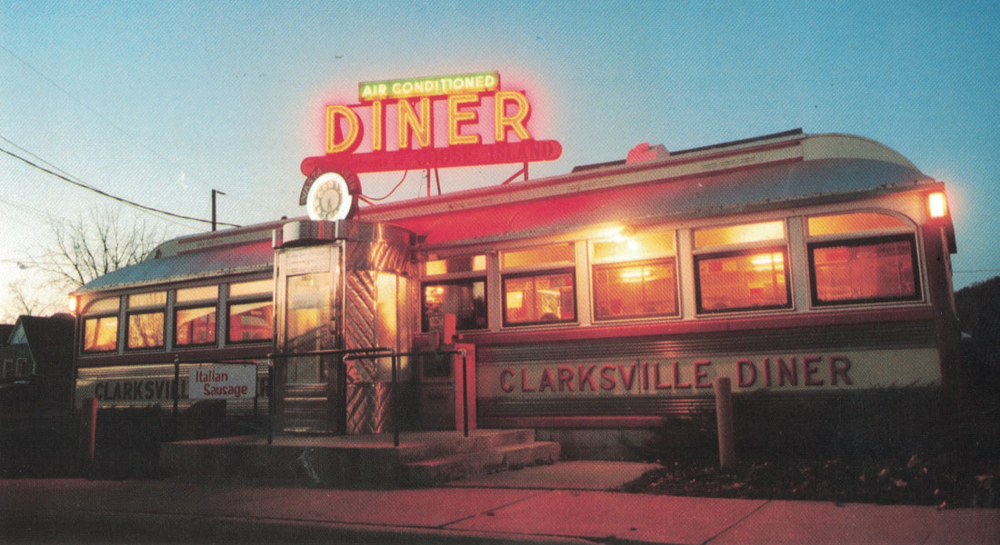
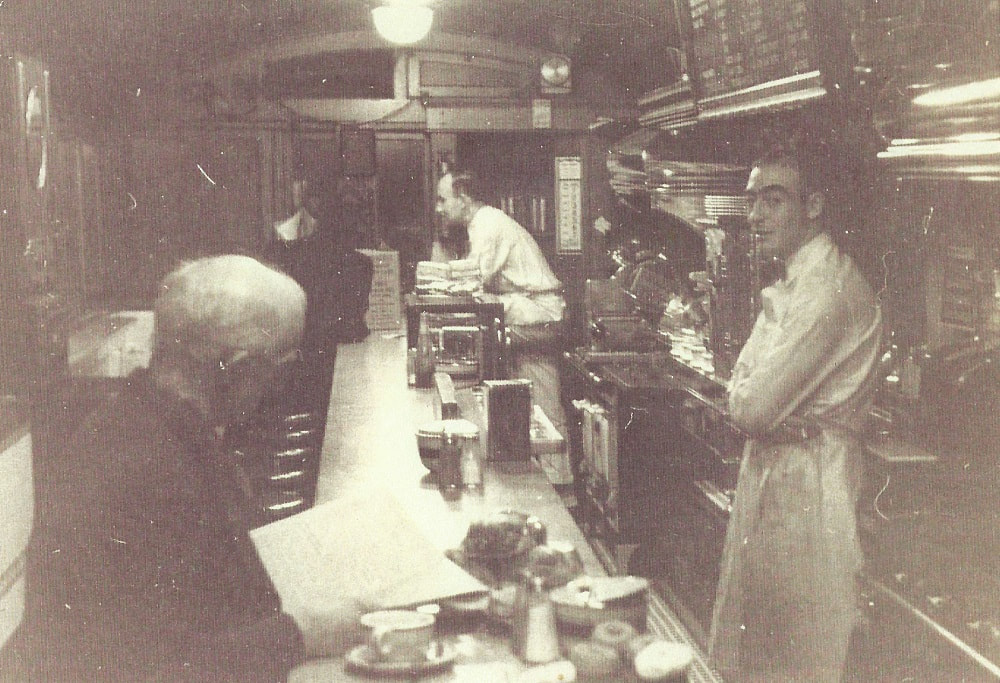
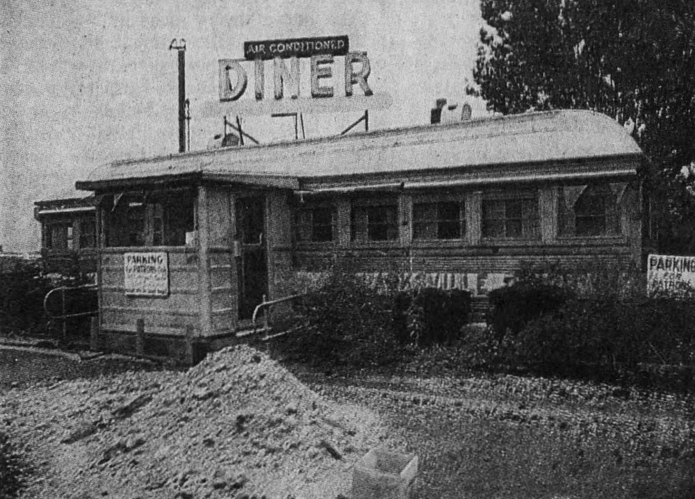
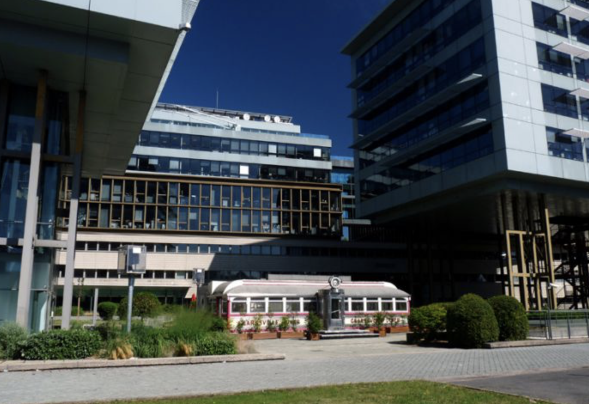
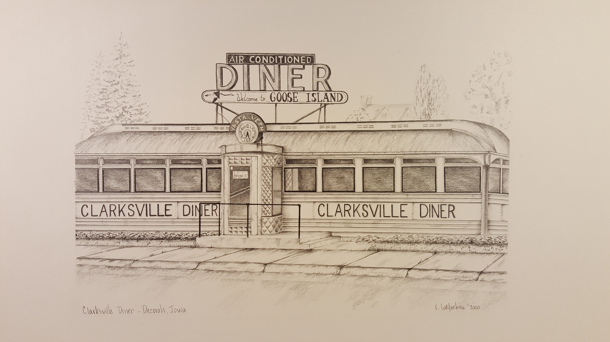

If I told you that a Jersey diner made its way to Paris, you’d have no choice but to believe me.
Once sitting along the stretch of Route 1 and Quakerbridge Road in Princeton, N.J., the Clarksville Diner, née Princeton Grill, stands wielding on the Seine, only a 10-minute drive to the Eiffel Tower. As if a scene fromUp, the 1930s-era chrome building looks wrong, tucking itself between the sprawling skyscrapers of the Boulogne-Billancourt business district. Its life as a restaurant in the throes of the Northeast has long met its end.
Before making its way to Paris, it ended up in Decorah, Iowa, pictured here in a vintage postcard.

Pictured as its former name, the Princeton Grill. The date this was taken is unknown. Patrons enjoy their meal the old-fashioned way. A little ominous.

The restaurant, now Clarksville Diner, in 1987 a year after officially closing in New Jersey. In 1988, it would move itself to Decorah.

Welp … there's it in Paris. It's now a multimedia space. It was moved to its present location in 1998.

Someone was so kind enough to hand-draw a picture of the diner in its Iowan iteration. Check out Frank Lamartina'sdiner series!